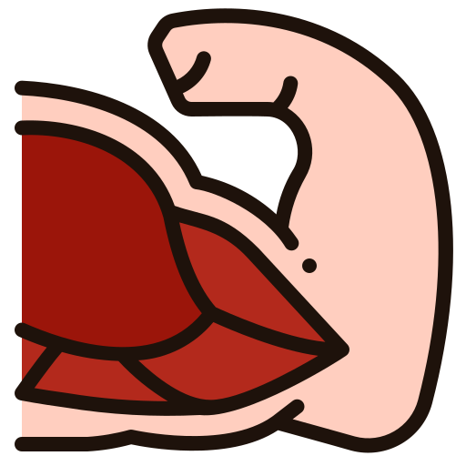

No, la valutazione include solo test funzionali semplici e un prelievo di sangue standard.
I test di forza e velocità del cammino sono completamente non invasivi.
La valutazione scientifica innovativa che predice la tua longevità e guida il tuo percorso verso un invecchiamento sano e attivo
La capacità intrinseca di un individuo di mantenere le funzioni fisiche e cognitive essenziali per un invecchiamento sano e attivo
Misura la tua capacità di mantenere forza, mobilità e funzioni metaboliche essenziali nel tempo
Algoritmo validato su oltre 880.000 soggetti per predire longevità e qualità di vita futura
Raccomandazioni specifiche basate sul tuo profilo unico per ottimizzare la tua capacità vitale
Rileva rischi per la salute prima che diventino problemi clinici evidenti
Guida interventi mirati per prevenire il declino funzionale e cognitivo
Raccomandazioni evidence-based specifiche per il tuo profilo biologico
Traccia i progressi nel tempo con metriche scientificamente validate
Dall'approccio tradizionale complesso al nostro algoritmo unifcato semplificato
Domini valutati
5
30 minuti
15+
66% Auc
Alta
Domini valutati
3
20 minuti
6-8
82% AUC
Semplificata
Il nostro algoritmo si concentra sui tre aspetti fondamentali che determinano la tua capacità vitale

40%
Valuta la forza muscolare e la capacità di movimento, indicatori chiave di vitalità e indipendenza
✅ Hand Grip Strenght
✅ Gait Speed (velocità cammino)
40%
Analizza il controllo glicemico e i livelli di infiammazione sistemica, predittori di malattie croniche
✅ HbA1c (emoglobina glicata)
✅ hsCRP (proteina C-reattiva)
40%
Misura la massa muscolare e la distribuzione del grasso, fattori critici per la salute metabolica
✅ Circonferenza polpaccio
✅ Circonferenza vita
Un processo semplice e veloce di soli 20 minuti per ottenere una valutazione completa della tua capacità vitale
2 min
Calibrazione strumenti e briefing del paziente
4 min
Antropometria e parametri base
8 min
Hand grip e velocità del cammino
3 min
Campione sangue per biomarkers
3 min
Calcolo score e spiegazione
Il tuo punteggio da 0 a 100 con interpretazione clinica e rischio predittivo
Rischio mortalità: <2% a 5 anni
Rischio mortalità: <2% a 5 anni
Rischio mortalità: 5-10% a 5 anni
Rischio mortalità: 10-20% a 5 anni
La nostra metodologia è basata su ricerche validate con oltre 880.000 soggetti studiati
502.293 soggetti
"Hand grip strength predice mortalità con HR=1.11 (IC 95%: 1.08-1.13, p<0.001)"
Leggi la pubblicazione →64.610 soggetti
"Gait speed è definito il sesto segno vitale per la sua capacità predittiva di outcomes clinici"
Leggi la pubblicazione →Meta-analisi
"Nuovi standard globali per la valutazione della capacità vitale nell'healthy aging"
Leggi la pubblicazione →Pre il controllo del tuo invecchiamento con una valutazione scientifica che può cambiare il tuo futuro